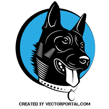

A verdadeira motivação vem de realização, desenvolvimento pessoal, satisfação no trabalho e reconhecimento.
Frederick Herzberg
A Pitico Pet

Na Pitico Pet, nossa paixão é cuidar dos seus amigos de quatro patas com o melhor em produtos e serviços. Explore nossa seleção de alimentos nutritivos, brinquedos divertidos e acessórios estilosos, todos pensados para garantir o bem-estar e a alegria do seu pet. Com uma variedade cuidadosamente escolhida e um atendimento especializado, estamos aqui para ajudar você a proporcionar uma vida saudável e feliz para seu companheiro. Navegue pelo nosso site e descubra tudo o que seu pet merece! Se precisar de qualquer assistência, nossa equipe está sempre disponível para oferecer conselhos e sugestões personalizadas. Obrigado por escolher a Pitico Pet! Estamos ansiosos para ajudar a tornar a vida do seu pet ainda mais especial. Acesse tambem a outra pagina da NOSSA LOJA
Sobre a loja
A Pitico Pet
é uma das maiores e mais renomadas pet shops
especializadas em produtos para animais de estimação em todo o Brasil.
Fundada em 1990, a empresa tem crescido constantemente,
conquistando uma clientela fiel e ampliando sua presença para além das
fronteiras nacionais, com uma abrangência que alcança atualmente
diversos países da América Latina.
Localizada em São Paulo, SP, nossa sede central é um verdadeiro hub de distribuição, de onde partem diariamente centenas de entregas para lares
de todo o país. Nosso compromisso com a qualidade e o bem-estar dos
animais é refletido em cada produto que oferecemos, garantindo a
satisfação e confiança dos nossos clientes.

Centro de distribuição da Piticos PetA seguir: História da Pitico Pet
-História-
A história da Pitico Pet
teve início há mais de três décadas, quando a
família Nascimento por animais, decidiu transformar sua
paixão em negócio. Com determinação e visão empreendedora, o
fundador, Nelson Nascimento
, liderou a expansão da empresa desde os
primeiros dias. O nome "Pitico" é uma homenagem ao
primeiro mascote
da família
, um pequeno cãozinho de estimação que inspirou a jornada
empreendedora.
O crescimento da Pitico Pet foi notável desde sua fundação. Em apenas dois anos, já atendíamos clientes em 10 estados brasileiros. Em uma década, expandimos nossas operações para outros países da América do Sul, consolidando nossa presença internacional. Hoje, a Pitico Pet tem o privilégio de servir milhões de clientes em mais de 15 países, oferecendo uma variedade de produtos que vai desde rações especiais até acessórios de luxo para animais de estimação.
O número de colaboradores cresceu junto com nossa expansão. Atualmente, somos uma das maiores empregadoras do setor pet no Brasil, contando com uma equipe dedicada de mais de 5 mil profissionais. Além disso, mantemos parcerias com milhares de fornecedores locais e internacionais, contribuindo para a economia e desenvolvimento da indústria pet em nosso país.
A Pitico Pet tem sido reconhecida não apenas pelo seu sucesso comercial, mas também pelo compromisso com causas sociais e ambientais. Recebemos prêmios de reconhecimento por nossas iniciativas sustentáveis e investimentos em programas de bem-estar animal. Nossa loja já recebeu visitas de personalidades influentes, incluindo membros do governo e celebridades que compartilham nossa paixão pelo universo pet. Estamos comprometidos em continuar a oferecer os melhores produtos e serviços para os nossos queridos amigos de quatro patas, mantendo sempre o respeito e amor pelos animais no centro de nossas operações.
Diferenciais da Pitico Pet
Diferenciais da Pitico
- Menor preço do varejo, garantido
- Se você achar uma loja mais barata, leva o produto de graça
- Gigantesca variedade de produtos para todos os tipos de pets de estimação
- Equipe de atendimento especializada e focada
- Programa de fidelidade com descontos exclusivos para clientes que costumam comprar com frequência
- Entrega rápida e eficiente em toda a região de São Paulo
- Consultas veterinárias gratuitas para clientes cadastrados
- Eventos e promoções especiais em aniversário do pet agendado
- Produtos de alta qualidade selecionados por especialistas
Sobre a matéria PLB
A seguir, reflexão pessoal do grupo:
Reflexão pessoal:
Durante a prática de laboratório com o professor Nelson, aprofundamos nossos conhecimentos em HTML e CSS, ferramentas essenciais para o desenvolvimento web. Aprendemos a estruturar páginas web usando HTML e a estilizar essas páginas com CSS para criar interfaces visualmente atraentes e funcionais. O processo de aprender sobre a criação de layouts, a aplicação de estilos e a adaptação de designs para diferentes dispositivos foi revelador.
Impacto no Entendimento
Esse aprendizado teve um impacto significativo no nosso entendimento do desenvolvimento web. Antes, tinhamos uma visão superficial sobre como as páginas web são construídas e estilizadas. Agora, compreendemos melhor como a combinação de HTML e CSS pode influenciar a experiência do usuário e a acessibilidade de um site. Aprendemos a importância de usar boas práticas para criar códigos limpos e eficientes, o que melhora a manutenção e a escalabilidade dos projetos.
A prática de aplicar esses conceitos em exercícios práticos nos ajudou a visualizar como os detalhes técnicos afetam a aparência e o funcionamento de um site. Com esses conhecimentos, nos sentimos mais confiante para criar projetos web que sejam não apenas esteticamente agradáveis, mas também funcionalmente sólidos e responsivos.
Aplicação Futuro
Esses conhecimentos são fundamentais para nossa jornada no desenvolvimento web. Agora, podemos aplicar o que aprendemos em projetos futuros e desenvolver habilidades mais avançadas. Além disso, a experiência adquirida durante o curso nos preparou para enfrentar desafios mais complexos e colaborar de maneira mais eficaz em ambientes de desenvolvimento web.